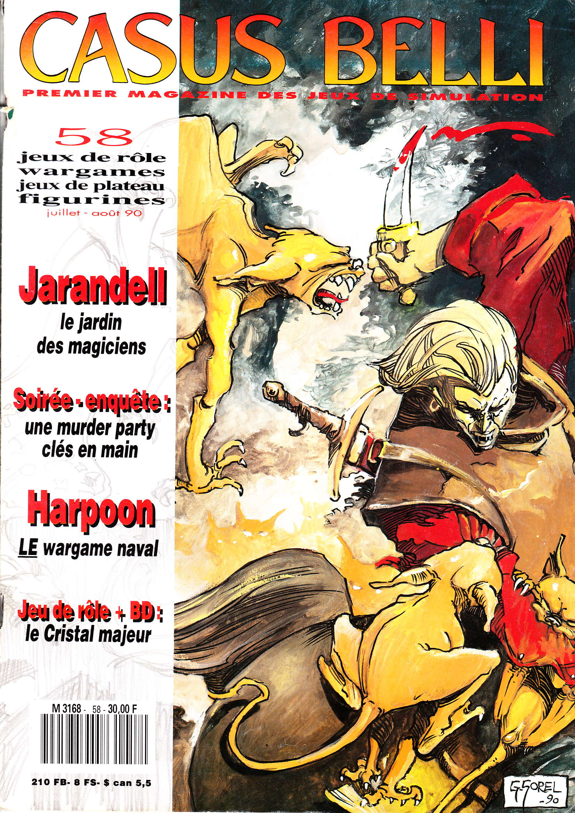
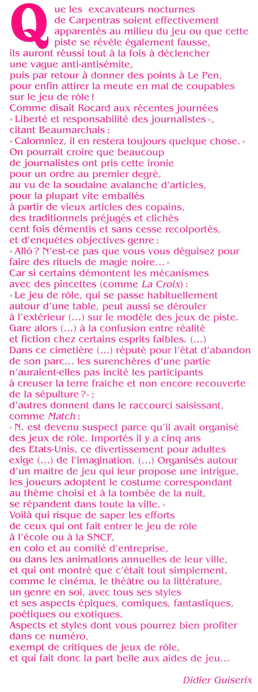
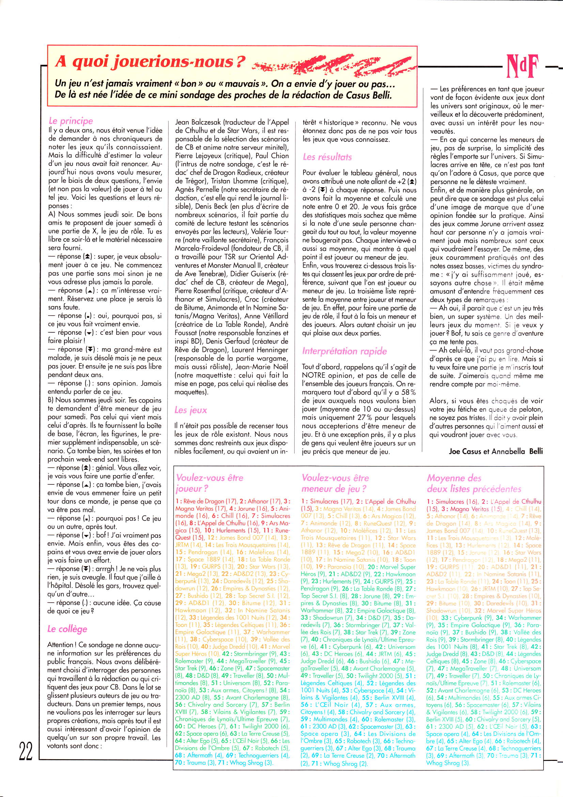
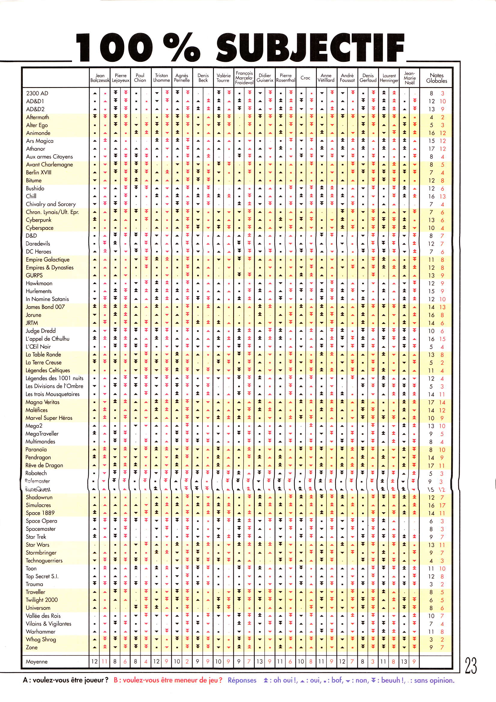

On commence par notre rétrospective d’actualité pour aborder l’été 1990. Un petit mot des températures car cet été est anormalement chaud, et sans vouloir faire une démonstration climato-sceptique, on a déjà cet été-là 3 vagues de chaleur successives et des températures caniculaires : 39° à Bordeaux fin juillet, puis 39° au Mans et 38° à Angers et Rennes. Même si les températures montent aux extrêmes que nous connaissons maintenant, cet été 1990 reste exceptionnel par rapport à ceux de la décennie précédente, ou ceux encore à venir.
Petite vidéo d’ambiance du Nantes d’il y a 35 ans lors de cette vague de chaleur : https://www.ina.fr/ina-eclaire-actu/nan … -questions
Normalement pendant cette période d’été, l’actualité ralentit et la parenthèse d’un monde plus apaisé qui avait démarré au printemps semble se poursuivre.
La démocratisation des pays de l’Europe de l’Est continue sans heurt majeur et avec des élections libres qui éloignent du pouvoir les anciennes instances communistes. Le mouvement est aussi porté par une Allemagne qui ne perd pas de temps sur son processus de réunification. Après avoir rassuré ses voisins européens que la réunification ne verrait pas le retour de la Grossdeutschland en garantissant une frontière Oder-Neisse avec la Pologne qui n’avait jamais été reconnue par la RFA, c’est un autre symbole de la division des deux pays qui disparaît avec le démantèlement de Checkpoint Charlie. Mais surtout, ce 1er juillet 1990, l’union monétaire se fait après à peine 6 mois d’études et de discussions. En validant la parité d’un mark est-allemand avec un mark ouest-allemand, l’Allemagne fait avant tout un pari politique – gagnant – qu’économique qui va assécher une économie est-allemande dont les coûts de fonctionnement sont désormais drastiquement survalorisés.
La feuille de route politique peut donc continuer à se dérouler : principe d’intégration de l’Allemagne de l’Est dans l’OTAN dans le cadre de la réunification que valide l’URSS de Gorbatchev et signature à Berlin du traité de réunification entre la RFA et la RDA le 31 août pour symboliser l’achèvement de cet été décidément très actif.
Pourtant les premières déchirures apparaissent en Yougoslavie, qui vont mener à une guerre civile à nos portes. La situation était déjà appréhendée dans ce conglomérat d’états et de nationalités, qui avaient pu être tenus par un Tito, mais qui ensuite à son décès ne pouvaient être plus que tenue par une Serbie hégémonique, dont le nationalisme allait se raidir au fur et à mesure des vélléités d’indépendance des autres républiques : les serbes de Croatie et de Bosnie-Herzégovine commencent à s’agiter dans ce sens, l’autonomie du Kosovo est supprimée par la Serbie ; et en même temps la Slovénie proclame sa souveraineté, déclenchant un jeu de dominos pour le reste de la Fédération Yougoslave. Mais tout ceci est encore assez imperceptible pour troubler la quiétude de l’été.
Même toile de fond mais à l’échelle Russe dans l’Union Soviétique : l’Arménie proclame son indépendance, tandis que la Géorgie connaît des troubles, et que Eltsine devient l’homme fort de la République de Russie. Et pour les amateurs du discours actuel Poutinien que l’Ukraine ne serait qu’une extension régionale de la Russie, c’est aussi dès cet été 1990 que cette RSS réclame son indépendance…
Aure foyer d’instabilité bien connu, mais où l’étincelle ne sera pas forcément déclenchée là où on le pensait : les Proche et Moyen-Orient. Tandis qu’Israël se débat toujours avec le problème palestinien, tandis que Liban peine à sortir d’une guerre civile qui dure depuis maintenant 15 ans et est alimentée par une Syrie alors unifiée et puissance régionale, c’est un allié américain imprévisible qui va faire basculer cette année 1990 en plein dans la torpeur du mois d’août. L’Irak de Saddam Hussein peine en effet à se reconstruire après la guerre dévastatrice Iran-Irak et la victoire à la Pyrrhus, pour ne pas dire le match nul qui en a résulté. En cause, un endettement écrasant contracté auprès de l’Arabie Saoudite et du Koweït, et un marché du pétrole en berne lié à la surproduction par certains, notamment le Koweït (encore lui) ne respectant pas vraiment les quotas vainement imposés par l’OPEP pour maintenir les prix. Ajoutons à ceci le territoire du Koweït qui donne un accès plus élargi au Golfe Persique et qui est revendiqué historiquement par l’Irak, et un dictateur hors sol qui croit bénéficier d’une protection, ou en tout cas d’une impunité, grâce à sa relation avec l’Oncle Sam, et tous les ingrédients sont réunis pour que les mouvements de troupe détectés dès fin juillet à la frontière ne se limitent pas à seulement une démonstration de force après des négociations bâclées par l’Irak. Le 2 août, le minuscule territoire du Koweït est envahi, une annexion territoriale qui est une première depuis la Guerre des Six Jours près de 25 ans avant, et semble alors complètement anachronique.
Le Nouvel Ordre Mondial résultant de la fin de la bipolarité est alors testé, et manifestement testé au plus mauvais moment pour l’Irak : l’URSS est alors complètement en retrait, et la communauté internationale accélère les résolutions de l’ONU pendant le mois d’août, sous l’égide des Etats-Unis décidés à protéger l’Arabie Saoudite qui est alors menacée, et surtout préserver la production de pétrole. Les résolutions s’enchaînent, tout comme les décisions malheureuses de Bagdad qui finissent de mettre l’Irak au ban des nations (les ressortissants étrangers pris en otage pour servir de boucliers humains), et rassembler une coalition plus vue depuis la Guerre de Corée ? Fin août, c’est déjà près de 80 000 GIs qui sont déjà déployés…
Cette première Guerre du Golfe, qui n’est pas encore une guerre puisqu’on n’est alors que dans le cadre de l’opération Bouclier du Désert, trace alors concrètement une Fin de l’Histoire qu’on voudrait écrire d’une communauté mondiale composée de démocraties, et unifié sous un organisme supranational comme l’ONU qui régirait un droit international. Mais un grand pouvoir implique une grande responsabilité et ce n’est pas forcément le chemin que les Etats-Unis, devenus hyperpuissance, parviendront à emprunter.
A la nouvelle dimension géopolitique s’ajoute aussi une nouvelle dimension médiatique, où l’information continue portée Outre-Atlantique par CNN, inaugure une guerre des images qui donnera le sentiment d’être dans un jeu vidéo démesuré, et en sublimant les lancements de Tomahawk ou de Patriot, masquera les dégâts humains de frappes carrément pas chirurgicales.
Passons maintenant au Casus Belli, qui en raison de sa partie wargame, va se retrouver en prise avec cette actualité mais on verra ceci pour le prochain numéro car en juillet, date de sa parution, le monde n’a pas encore basculé. Le Casus 58 de cet été 1990 se fait sous une couverture du talentueux Guillaume Sorel :

Pas d’Epreuve du Feu dans ce numéro, mais au contraire beaucoup de matériels que nous allons passer en revue. Mais avant d’entrer dans ces réjouissances, Casus démarre avec un édito courroucé de Didier et relatif encore à une autre actualité avec les événements récents de Carpentras : quand on connaît le flegmatisme de Didier, on devine que la moutarde lui est vraiment montée au nez pour livrer cette tribune. Je vous la reproduis ci-dessous en intégralité.

On comprend les préoccupations de Didier quand on constate le dynamisme des conventions qui sont ensuite revues et les efforts d’ouverture du loisir : une convention de jeux de plateau dont l’activité semble encore aussi marginale – voire plus – que celle du JDR, et autour de titres comme Diplomatie, Civilisation, Full Metal Planet, Illuminati, Zargos, Kremlin, Supergang, Junta si tous ces vieux noms vous évoquent des madeleines ; d’autres formules originales comme à Noisy le Grand avec une simulation des 24h du Mans sur 24h (!) ou du JDR à Compiègne, mais où l’improvisation est mise à l’honneur plutôt que les podiums des meilleurs Meneurs / Joueurs ; ou enfin un Killer à Limoges et un GN Belle Epoque en bord de mer (Sainte Maxime). Et d’autres conventions qui ont le bon goût de s’associer avec des événements plus grand public (Morlaix, avec un festival de cinéma), ou de s’ouvrir vers le public : Gradignan ou Le Havre, avec une partie exposition proposée.
Les débriefs sont complétés avec les quelques actualités qui intéresseront ceux qu’on ne nommait pas encore les geeks puisque Tristan fait la publicité du centième anniversaire de la naissance de Lovecraft (alors qu’on approche maintenant bientôt du centième anniversaire de son décès) avec les réjouissances encore confidentielles qui allaient se dérouler pour cette année 1990 (et sur lesquelles Tristan fait un clin d’œil vers son premier scénario publié dans CB 41). La partie rédactionnelle continue avec une double page sympa et éminement subjective sur les jeux préférés de la rédaction : on aura une pensée pour Pierre Lejoyeux, Anne Vétillard et plus récemment François Marcela-Froideval qui nous ont quitté depuis. Je vous la reproduis aussi ici, notamment pour les jeux joués alors, aussi éclectiques mais beaucoup moins prolifiques que sur Casus NO.


Dans les sorties à venir, l’invasion n’est pas encore TORG en français (mais c’est bientôt et avec les grands moyens comme une publicité pleine page de Descartes l’annonce), mais SimulacreS avec le module Ceux des Profondeurs et les annonces pour Cyber Age et Aventures Extraordinaires et Machinations Infernales. Ce même numéro de Casus est très orienté SimulacreS avec un univers de BD adapté (j’y reviens plus tard) et tous les scénarios en encart proposés aussi avec une version SimulacreS. D3 continue à annoncer des extensions pour Alter Ego – Ecolocity – tandis que celles précédentes ne sont toujours pas parues (Hyper espace, ou les traquenards du temps). Mal en point, on nous annonce pourtant le retour du Dragon Radieux avec un prochain numéro du magazine à paraître, et le troisième numéro de Hurlelune pour Hurlements. Carrière aussi écourtée pour Les Simarils avec La Terre Creuse avec la sortie du Guide de l’Imperium avant fermeture définitive. Enfin, tout aussi précaire puisqu’ils ne sont même pas dans les prévisions alors qu’ils ont payé une pleine page de pub, les Éditions des 7 Pierres avec la sortie sans lendemain de Mimetis, le jeu de l’adaptation, mais apparemment pas tant que ça.
Flamberge est un peu mieux portant et continue à développer Les Divisions de l’Ombre (le supplément American Grim) et l’annonce d’une 2ème édition du jeu (mais qui ne paraîtra jamais non plus). Et surtout l’annonce de Prédateurs pour la fin de l’année qui finira de faire sombrer cet éditeur ambitieux. Activité aussi soutenue chez Hexagonal avec l’annonce de la traduction (hum…) de la 1ère édition de Shadowrun.
Les trois grosses locomotives sont alors Descartes, Siroz et Oriflam. Chez le premier, les actualités sont l’annonce de TORG pour la rentrée, James Bond avec le supplément de règles Pour Votre Information, Middenheim pour Warhammer et la parution prochaine de la VF de la 4ème édition pour l’AdC, oui celle-ci avec cette couverture intemporelle pour les VCI comme moi quand ils la mettent en parallèle de celle de l’édition actuelle de chez Edge :
Avant :
Après :
Chez Siroz, l’éditeur fait son chemin vers sa professionnalisation qui finira par construire le tentaculaire Asmodee : ainsi, plutôt que de persister sur ses gammes historiques Athanor et Whog Shrog, celles-ci sont arrêtées pour dégager les moyens pour Car Wars (le supplément le Rêve Américain) et INS / MV avec déjà le 2ème supplément (Daemonis Compendium), et re-déjà l’annonce du 3ème avec Berserker. Enfin Oriflam continue à développer la production originale pour Hawkmoon avec le mythique La France, et de s’engager sur la traduction de la prochaine édition de Pendragon après la disparition définitive de Gallimard (je précise : pas de l’éditeur ici, mais de sa présence sur le marché du JDR 😄 ).
Sur les VO, l’activité semble plus fournie outre-Atlantique, probablement avec la Gen Con approchant. Chez Chaosium avec encore et toujours du matériel pour l’AdC : les recueils At Your Door et Mansions of Madness. FASA avec sa désormais locomotive de Shadowrun : Paranormal Animals of North America et The Grimoire. Même locomotive chez Talsorian avec Cyberpunk qui annonce sa seconde édition qui décale le contexte de 2013 à 2020, les fameuses Années Noires : c’est déjà hier ! ICE est toujours aussi prolifique avec MERP / Rolemaster / Cyberspace, un éclectisme à l’image du TSR de Loraine Williams qui en a relancé et diversifié l’activité avec la parution de Buck Rodgers grâce à l’héritage familial. Et sinon du Top Secret (the W.E.B), et les multiples déclinaisons maintenant de (A)D&D(2) : Ronin Challenge (Oriental Adventures), Skull and Crossbows (Spelljammer), Shadow Elves (Gazeteer). Et enfin West End Games dont le TORG débarque de façon massive : la boîte de base avec ses innovations (les cartes événements), l’écran, l’amorce de la campagne des Reliques du Pouvoir avec le premier volet The Destiny Map, le premier tome des romans, et le Nile Empire Sourcebook à paraître peu après : on se croirait dans les paliers débloqués d’un financement participatif !
Pour les critiques, pas d’Epreuve du Feu certes, mais des Têtes d’Affiche plus nombreuses que dans les Casus précédents, enfin ! Casus passe en revue Mimetis, avec une critique très mesurée de @Tristan qui attend pour se prononcer des suppléments qui ne paraîtront jamais. Toujours dans le Multivers, Mimetis est clairement le parent pauvre de TORG sur lequel Tristan s’enthousiasme en revanche nettement plus (même s’il me semble qu’il n’a jamais contribué sur ce jeu ?).
Pierre Lejoyeux s’intéresse pour sa part de la 4ème édition en VO de Stormbringer avec un avis presqu’aussi mesuré que sur Mimetis, c’est dire… L’autre Pierre (Rosenthal) explore le GURPS Cyberpunk qui vient juste de réchapper des griffes de la CIA (véridique !) et forcément le considère comme un supplément à l’état de l’art par rapport à sa projection de l’informatique à l’époque. Quand on le lit aujourd’hui, forcément il accuse lourdement son âge !
Enfin Anne (Vétillard) se régale de suppléments Rolemaster et AD&D2 qui peuvent largement se recycler dans tous jeux med-fan : respectivement l’Elemental Companion et le Complete Thief’s Handbook, qui explore notamment le concept de Guilde de Voleurs. Le rédactionnel de Casus continue avec un débat (soporifique) mené par Pierre Lejoyeux sur le Chaos, finalement très influencé par les visions de Moorcock et un peu moins Glorantha, et avec des avis pontifiants d’auteurs comme Froideval, et plus caustique comme celui de Croc (même s’il ment comme un arracheur de dents quand il prétend ne pas acheter de jeux Games Workshop). Jean Balczesak, toujours sous le pseudonyme de son épouse co-rédige avec Cyril Rayer un excellent article sur le Costume Médiéval – on regrette que celui sur les armures qui aurait dû le compléter ne soit jamais paru. Mais on a sa dose d’Histoire avec ce qui suit, car ce numéro de CB propose également en dossier deux univers destinés à alimenter du matériel pour Simulacres : un sur la civilisation historique Celte de Marc Deladerrière, net et rigoureux ; et un sur l’univers de la BD du Cristal Majeur qui ne me parle pas du tout (alors que signée par Jean Giraud / Moebius sur le scénario ?!).
Ces matériels sont réutilisés ensuite dans l’encart Scénarios car sur les 4 proposés, deux le sont pour Simulacres, option les Dossiers présentés dans le numéro. Pas mal pour le placement de produit, Casus ! Je me moque mais en fait ça avait vraiment son utilité pour les ados comme moi qui étaient rationnés à leur anniversaire ou Noël pour augmenter leur collection de matériels, et qui pouvaient donc basculer sur Simulacre$ pour exploiter tout l’encart : les deux autres jeux proposés, JRTM et l’AdC, sont d’ailleurs aussi proposés pour être adaptés.
Regardons-les maintenant plus en détail :
- No man’s land pour l’AdC de @Tristan marque le début de l’ère de Lhomme, près de 3 ans après la publication de sa première œuvre (et certes encore un an avant la publication de la suivante) : beaucoup plus dans le canon Appel de Cthulhu que le précédent qui se voulait davantage un hommage au Maître de Providence, on retrouve la patte de l’auteur à la fois avec un clin d’œil à l’œuvre de Lovecraft en réutilisant un de ses célèbres protagonistes comme PNJ, et une vraie œuvre personnelle avec un scénario qui se déroule fin 1918 dans une France qui sort à peine de la boucherie de la Première Guerre Mondiale. Bien qu’impossible à déplacer dans un autre lieu ou à une autre période, il proposera une belle partie one shot avec des investigateurs prêts à jouer (repris par exemple de Sous un Ciel de Sang pour ensuite relier potentiellement avec cette campagne ?) et des novices ou confirmés voulant s’offrir un bon moment de jeu, l’aspect historique en prime avec le cadre posé. A noter qu’il a été réédité dans le Musée de Lhomme, partiellement enrichi mais sans grande transformation par rapport à cette version du numéro 58
- Un été en hiver est proposé par Marc Deladerrière pour Premières Légendes Celtiques ou Simulacres. S’il pose bien l’ambiance dans la lignée de ce qui était présenté avec le dossier de civilisation des Celtes dans le magazine, le déroulement très statique et séquentiel présente en revanche un intérêt plus limité…
- La caverne de cristal pour JRTM est à Anne Vétillard – qui en est l’auteure – ce que l’AdC est à Tristan : ce scénario n’est certes pas son plus réussi en raison de sa linéarité, mais il mêle protagonistes issus de l’univers de Tolkien et créations d’Anne qui aboutissent à une belle histoire, idéale pour une partie de découverte dans la suite de la Boîte d’Initiation si vos hobbits partent enfin pour découvrir le grand monde, ou éventuellement un petit intermède plein de poésie lors d’une campagne : à étudier !
- Mission d’ambassade de Marc Bati, le dessinateur de la BD du Cristal Majeur, est donc le scénario qui prend place dans l’univers de cette BD et du dossier Simulacres de ce numéro. Il m’a semblé assez mineur avec son expédition loufoque mais assez attendue ; probablement aussi parce que le dossier et l’univers de la BD ne m’ont pas spécialement accroché
On continue sur le matériel de jeu avec pas moins d’une Murder Party complète proposée, qui a une vraie valeur de pièce d’archéorologie à une époque où le Grandeur-Nature a pris son essor, mais reste une activité encore balbultiante dans son organisation et ses propositions de jeu (quand on veut faire autre chose que du med bour avec des épées pas encore tout le temps en latex). Pièce archéorologique aussi parce qu’elle est signée par Benoît Clerc et Rémy Vanliefde qui seront deux des trois futurs fondateurs de SPSR, et qui publieront l’excellente gamme des Soirées Enquête. Il est amusant qu’ils n’aient jamais recyclé ensuite cette première version d’un genre qu’ils aideront ensuite à bien plus populariser (je dis ça parce que je suis tombé dans le GN, notamment grâce au matériel SPSR). Pièce archéorologique enfin, parce qu’on appréciera sur les 30 rôles proposés que seulement 3 soient féminins, forcément séductrices pour deux d’entre elles…
Après Goferfinker, Casus s’engouffre à nouveau dans un mini-univers, Jarandell. Comme avec toute la production Casus précédente, l’imagination est au rendez-vous, ici sous la plume des sieurs Gerfaud et Balczezak, et surtout enrichi des figurines et visuels de Frank Dion, le responsable de la rubrique des Métalliques. On piochera allègrement des idées, notamment pour Rêve de Dragon en raison du pedigree de l’un des auteurs. Mais le développement ne se faisant que sur deux numéros, ces univers restent plus anecdotiques qu’emblématiques.
On passe sur la partie Wargame qui continue son dossier sur le Combat Moderne, alors même que celui-ci va reprendre forme réelle avec l’invasion du Koweït par l’Irak. On lira forcément amusé le dossier de Michel Vineau pour rappeler qu’il ne suffit pas d’être un fin théoricien de la guerre et / ou un expert en armement pour être pertinent en géopolitique. Si parmi toutes les menaces dessinées, certaines se sont avérées, le dossier est quand même très caricatural dans son écriture : la Tchécoslovaquie promise à un bel avenir alors qu’elle se disloquera en deux, les réticences des Russes à intervenir dans les républiques musulmanes à cause du traumatisme afghan (allez dire ceci aux Tchétchènes…), une lecture très superficielle de l’Islam politique (où l’Arabie Saoudite est considérée comme un pays arabe modéré) heureusement conclue par un prudent « rien n’est certain » sur les prévisions optimistes faites… Les craintes se focalisent sur le Continent Européen et les multiples déstabilisations possibles : le retour d’une Allemagne hégémonique dans le cadre de la réunification, la dégringolade de l’URSS dans un chaos généralisé avec des armes nucléaires disséminées à tout va…
Ce dossier qui manque fortement de rigueur résume cependant bien les craintes de l’époque, finalement très éloignées de nos champs de bataille actuels, mais peut-être aussi parce qu’on a voulu les traiter en priorité et laisser de côté la montée d’autres périls ? Je ne vais pas plus loin dans les What If vertigineux que cela écrirait et Casus non plus, puisqu’après ce court essai, on revient à des éléments plus basiques sur les meilleurs wargames pour simuler ces conflits modernes. Il sera donc question de Team Yankee et Test of Arms, ainsi que de Light Division, ce dernier s’intéressant surtout et de façon prémonitoire au théâtre du Moyen-Orient (enfin pas si prémonitoire car il s’agit surtout de cibler l’Iran, plutôt que l’Irak…). On trouvera aussi une revue sur 3 pages de Harpoon, dont la complexité semble être solutionnée par un jeu équivalent sur ordinateur, qui est revu dans la rubrique Ludotique, mais en solitaire contrairement à son équivalent papier : le modem et le réseau sont encore des réalités éloignées en ce début 1990. Une riche bibliographie complète enfin ce dossier sur le guerre moderne, mais encore très tourné sur la menace soviétique.
Les règles de Première Ligne continuent pour leur part dans ce numéro, avec une version fantastique : la boucle semble désormais bouclée pour cette version de règles pour figurines en terminant sur ce Casus là où TSR a commencé avec Chainmail et D&D. On finit sur les rubriques « culturelles » : à côté de Harpoon dans Ludotique, Casus consacre une pleine page à Dragons Breath avec une critique très positive de Pierre Rosenthal, et qui ne parle pas du tout à ma mémoire (très limitée il est vrai sur les jeux informatiques).
Concernant les romans, Roland Wagner s’extasie sur Hydres de Don Hérial et La grande rivière du ciel puis Marées de Lumière de Gregory Benfort, que je découvre ici et qui donnent envie d’être découverts. A côté de ceux-ci, on retrouve aussi des titres des auteurs fétiches de Roland : Norman Spinrad (L’enfant de la fortune), Marion Zimmer Bradley (La captive aux cheveux de feu), ou plus inattendue mais qui résonne aujourd’hui, La servante écarlate de Margaret Atwood.
Beaucoup de BD, comme dans les précédents numéros, où il est difficile d’en extraire celles qui ont traversé les ans : peut-être le tome 2 des Chroniques de la Lune Noire de Froideval, ou Les Héritiers où on retrouve la signature des GE Ranne. Et surtout la sortie de l’album Kroc le Bô chez Delcourt qui vient donc d’être réédité 35 ans après !
Dans les lectures de Tristan, beaucoup de classiques : la série des Fu Manchu ou celle de Jeeves. C’est plus le livre sur Albert Londres (Vie et mort d’un grand reporter) qui aura attiré mon attention, ou le Guide de la France Insolite de Claude Arz. Et on découvre aussi un Tristan concerné avec l’actualité qui nous recommande une Histoire de la Russie et une Histoire des Pays de l’Est pour bien comprendre les bouleversements du monde en cours, ainsi que l’ouvrage Les Nouvelles Sectes d’Alain Woodrow, celles-ci occupant si vous vous souvenez une large part des inquiétudes de ce début de la décennie 1990, avant qu’on en fasse ensuite l’amalgame avec les rôlistes alors que les traumatismes de Carpentras se seront atténués. Mais ceci est de l’Histoire encore à venir…